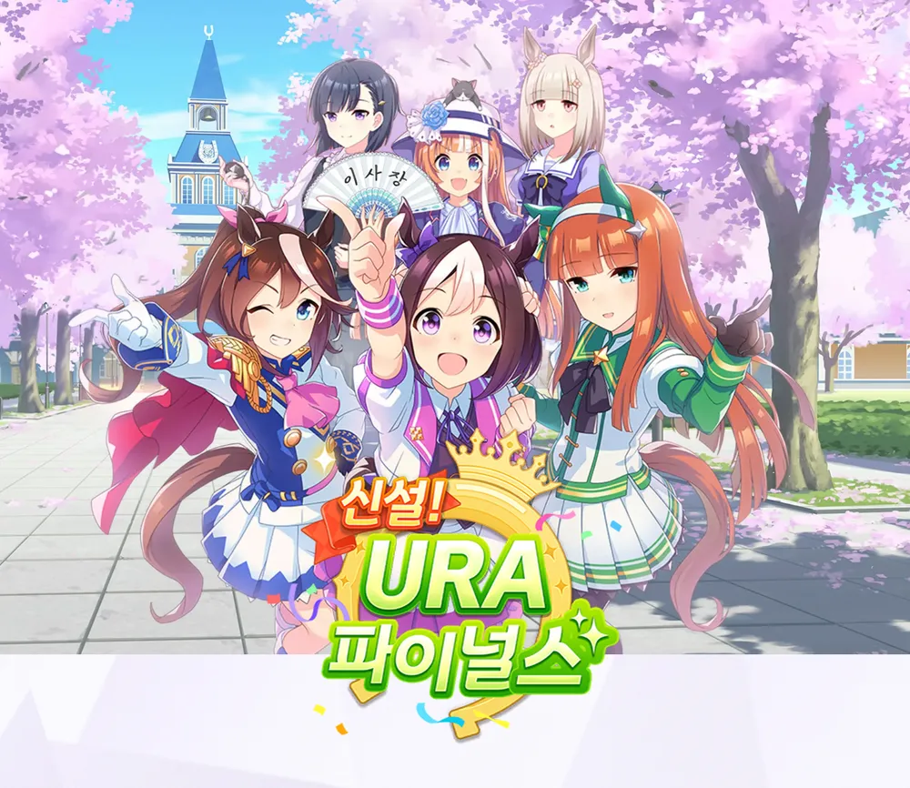
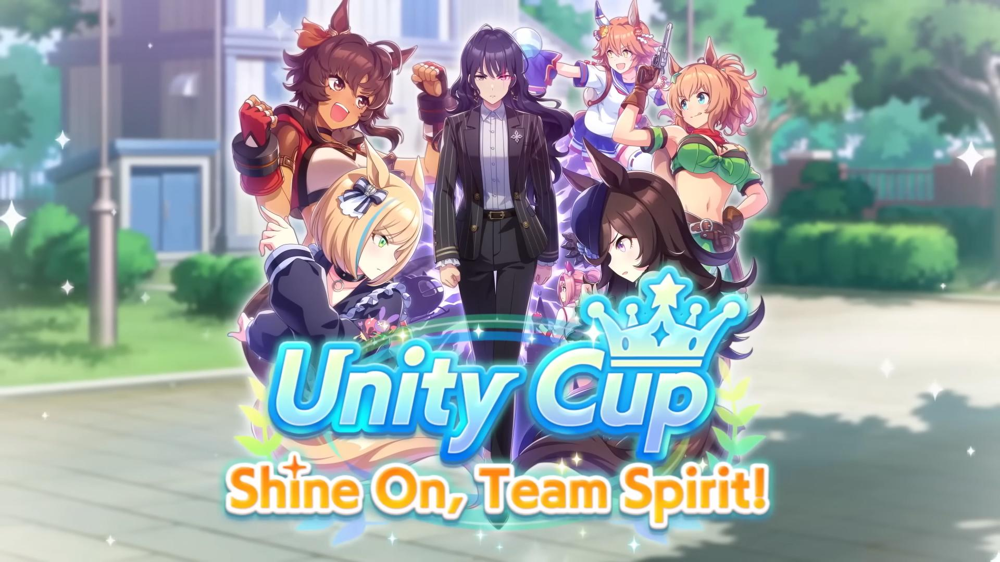

Scenario Guide
Last updated on 2023-01-19
Currently there are two scenarios in Global Server.
URA Finale
Being the very first scenario, URA Finale was released alongside the JP server of the game on February 24, 2021.
Narratively, this scenario focuses on the titular set of URA Finale races established by the Tracen Academy chairwoman Yayoi Akikawa. You will spend three years in Career training, aiming to become the champion of these new races.
Basic Information
During the URA Finale journey, you will have to clear character-specific objectives to advance. There are multiple types, like participating in a particular race, achieving certain placements, or gathering a specific amount of fans.
Clearing all objectives will allow you to participate in the URA Finale qualifiers. Win these to move on to the semi-finals, and then the grand finals.
The trainer Aoi Kiryuin and her trainee, Happy Meek, appear in this scenario as story characters, and will be your rivals on the way to the top.
Scenario Link
The URA Finale features Aoi Kiryuin as a scenario link character. Her training events will be strengthened if you use any of her support cards in your deck.
Specifically, the training event "A Three-Legged Race", which occurs during the first half of November in the second year, will now award a level 3 hint for Iron Will on success (instead of level 1).
Fixed Training Events
During Early November of the second year, the event "A Three-Legged Race" featuring Aoi Kiryuin will trigger. If you have gathered 50.000 fans by then, you will be awarded a level 1 hint for the Iron Will skill, 20 Skill Points, and 20 Wisdom. This event is affected by the scenario link, as described in the section above.
Gathering 100k fans will award you with 30 Skill Points at the end of the second year. Gathering 240k fans by the end of the third year will do the same.
An event that raises your girl's Mood is guaranteed to trigger in Early March of the second year.
Events that can raise your character's unique skill level will trigger in:
- Early February of year 3
- Early April of year 3
- Late December of year 3
For specifics, see the Unique Skill Level-ups section right below.
Additionally, a training event called 「アツい差し入れ」 featuring Chairman Akikawa was added to the game alongside the JP server's November 2022 update (it may not yet exist on other servers). It is guaranteed to trigger during the end of Late July (halfway through summer camp) in years two and three and restores 30 energy.
Unique Skill Level-Ups
During the three years of training, you will have three chances to level up your character's unique skill.
These are triggered by getting:
- 60.000 fans by Early February of year 3 (Valentine's Day)
- 70.000 fans by Early April of year 3
- 120.000 fans by Late December of year 3 (Christmas)
You can still trigger the later events even if you missed a previous one. For example, if you missed the Valentine's Day level-up, you can still trigger the one in Early April.
For characters with high dirt aptitude but low turf aptitude (such as Haru Urara or Smart Falcon), these values are lowered to 40.000, 60.000, and 80.000, respectively.
The April level-up also requires a green friendship gauge (3 bars) with chairman Akikawa.
Happy Meek Duels
During a Career, training facilities may randomly include Happy Meek as a training partner. Whenever there is an orange "Duel" 「対決」 mark on her icon, carrying out that training will trigger a training event where you can duel her. Failing the training will not start a duel.
You'll be given three choices. The first one will always be the stat type that triggered the duel; the other two will be random choices picked from the five stat types and Energy (体力).
Each choice will also show your chances to succeed at the said duel, indicated by the usual ✕, △, 〇, and ◎. Succeeding will raise Happy Meek's level for the next duel and award you with the following:
- a stat uncap of 4 for the targeted stat,
- between 10-25 of the targeted stat (depending on Happy Meek's level),
- 30 skill points,
- 4 maximum energy,
- a skill hint for the relevant "Essence of Racing" skill (see list below).
Winning repeated duels focused on the same stat will raise the hint level further.
Losing a duel will award 5-15 of the targeted stat depending on the level and 5 SP.
Here is a list of all obtainable Essence of Racing skills:
- Essence of Racing・Speed
- Essence of Racing・Stamina
- Essence of Racing・Power
- Essence of Racing・Wisdom
- Essence of Racing・Guts
- Essence of Racing・Energy
A spark for each of these new skills also exists. They have a common and an enhanced ("+") version, each going from 1 to 3 stars as usual. The common versions simply grant hint levels for the respective skills, while the enhanced versions will also grant some of the respective stat (or SP in case of the Essence of Racing・Energy spark).
What decides whether you can get the normal or plus spark is still under investigation, but it might be related to maxing out Happy Meek's level and winning against her in the URA Finale Final race.
The difficulty of these duels scales with Happy Meek's level. Winning 5 duels will max out her level (displayed as "Lv MAX" in the duel icon), causing a strengthened version of her with a blue-glowing aura to appear in the URA Finale Finals race. Similar to legend races, there will be a cut-in before/after the race.
She will have the following aptitudes, skills, mood, and something in the range of the following stats (specifics can vary by ±10 in each stat):
Winning against this powered-up Happy Meek will affect the "After the URA Finale Finals" (「URAファイナルズ決勝の後に」) training event that occurs at the end of a Career run. It will now award you with a hint for the Beyond the Limits scenario skill, as well as giving you 20 of every stat and 150 SP (these values are affected by race bonus). Your chances of receiving the URA Finale scenario spark will also be raised.
If you don't trigger her appearance, the event will instead award 10 of every stat as well as 80 SP (also affected by race bonus) with no hints given.
Base Training Values
These are the base training values for the URA Finale scenario. This means that training at the specified facility, without any support cards present and without accounting for character growth rate bonuses, will yield the following stats at facility level 1.
| Facility | Stat gains | Energy |
|---|---|---|
| Speed | +11 Speed, +6 Power, +4 SP | -21 |
| Stamina | +10 Stamina, +6 Guts, +4 SP | -19 |
| Power | +6 Stamina, +9 Power, +4 SP | -20 |
| Guts | +5 Speed, +5 Power, +8 Guts, +4 SP | -22 |
| Wisdom | +2 Speed, +10 Wisdom, +5 SP | +5 |
Experienced players may recall the URA Finale as they were prior to the JP server update in November 2022, before these values received an overall increase. These values currently also apply for the Global server.
Training Facility Levels
The level of the training facilities in the URA Finale scenario will rise depending on how often you train at them.
All facilities start at level 1 and level up every four times you use them. For example, training Speed four times will raise its level from 1 to 2, another four trainings will increase the level from 2 to 3, and so forth, until level 5.
Scenario Spark
The scenario spark obtainable in the URA Finale is called "URA Finale" (or 「URAシナリオ」on JP). It will increase your Speed and Stamina when triggered during inspiration events.
Stat Caps
| Stat | JP Server Cap | Global Server Cap |
|---|---|---|
| Speed | 1400 | 1200 |
| Stamina | 1400 | 1200 |
| Power | 1400 | 1200 |
| Guts | 1400 | 1200 |
| Wisdom | 1400 | 1200 |
On the Global server, the stats have different caps. They will be changed in a future rebalance patch.
Unity Cup Scenario
The Unity Cup was once a traditional team competition at Tracen Academy. However, the tides of time have not been kind to this event, as it hasn't been held in a long time...
At least until now. At the request of the students, the Unity Cup is to be revived, and Umamusume who were once rivals will join hands in this exciting competition!
At the same time, Chairman Akikawa has been called away on a long-term business trip overseas. The strict-looking URA executive, Riko Kashimoto, has been appointed as the acting chairman. Dark clouds begin to gather over the Tracen Academy...
Basic Information
Unity Cup (also called Aoharu Hai outside of the Global server) is an Uma Musume career scenario released on November 6, 2025 (August 30, 2021 on JP). After URA Finals, it's the second permanent scenario added to the game.
As it builds on many of the mechanics from URA Finals, this article assumes you know the basics of playing the game. If you do not, please read the Beginner's Guide beforehand.
Unlike the URA Finals, where you only focus on training one character, the Unity Cup focuses heavily on team tournaments instead. So your trainee won't be the only one you'll be cheering on!
Unity Cup can be selected in the main Career menu, before choosing your trainee. You can switch freely between Unity Cup and URA Finals before every training session.
New Story Characters
In the final Unity Cup race, you will compete against your rival team called First, which was founded by the acting chairman, Riko Kashimoto (Romi Park).
Her team will consist of Uma Musume original characters, including Little Cocon (Saho Shirasu, on the left) and Bitter Glasse (Aino Shimada, on the right).
Differences between the Unity Cup and URA modes
For the most part, you can think of Unity Cup as URA Finals with an extra sprinkle on top. The schedule is mostly the same, as are objectives and optional races, and you will even do the three Finals races at the end of the career.
There are new mechanics added to this mode though, and basically all of them revolve around team racing, more specifically to the Unity Cup.
Unity Cup is a team competition that will happen once every six months of a career. It's very similar to the Team Trials, and you will be doing five races in each of the tournaments. It's important to pay attention not only to your main character but to the entire team.
Another important difference is that your training facility level does not increase by simply using it as before, but it's now tied to your overall team rank.
Unity Cup will be your Career mode of choices for aces. However, it takes slightly longer on average, which can sometimes make URA Finals a better choice for inheritance or fan farming.
Scenario Race Spark
As you probably know, the URA Scenario has its very own (and very strong) race spark that can be randomly obtained after winning the finals, giving speed and stamina on successful inheritance.
The Unity Cup Scenario also has its own spark, called simply Unity Cup (アオハル杯シナリオ), which grants extra power and wisdom.
Stat Caps
| Stat | JP Server Cap | Global Server Cap (Expected) |
|---|---|---|
| Speed | 1300 | 1200 |
| Stamina | 1300 | 1200 |
| Power | 1300 | 1200 |
| Guts | 1300 | 1200 |
| Wisdom | 1800 | 1200 |
Base Training Values
These are the base training values for the Unity Cup scenario. Meaning that training at the specified facility, without any support cards present and without accounting for character growth rate bonuses, will yield the following stats at facility level 1.
Global server:
| Facility | Stat Gains | Energy |
|---|---|---|
| Speed | +8 Speed, +4 Power, +2 SP | -19 |
| Stamina | +7 Stamina, +3 Guts, +2 SP | -17 |
| Power | +4 Stamina, +6 Power, +2 SP | -18 |
| Guts | +3 Speed, +3 Power, +6 Guts, +2 SP | -20 |
| Wisdom | +2 Speed, +6 Wisdom, +3 SP | +5 |
On the Japanese server, the values were changed during the 2023 update. See the Aoharu Scenario Update section below for details.
Unique Skill Level-ups
The mechanic for leveling up unique skills in the Unity Cup scenario is almost identical to URA Finals. That means getting 60.000 fans by Valentine's Day (Early February), 70.000 fans by Early April, and 120.000 fans by Christmas (Late December) of the Senior year (the third year).
These values are 40.000, 60.000, and 80.000, respectively, for characters with high dirt aptitude but low turf aptitude (such as Haru Urara or Smart Falcon).
Because Chairman Akikawa is not present in this scenario, the April level-up does not require a green bond gauge with anyone.
Unity Cup Mechanics
This section will describe the new mechanics from Unity Cup in detail.
There's also an in-game event with Tazuna which serves as a tutorial a few turns into the run.
Gathering Team Members
Of course, what a team competition needs most is team members. Thankfully these are not hard to come by during the Unity Cup.
Your team will consist of:
- Supports from your deck (excluding Pals),
- the story characters Haru Urara, Rice Shower, Matikanefukukitaru, and Taiki Shuttle,
- and several random characters who will join later.
While the story characters will join your team relatively close to the start of a run, a few random characters will join your team after each half-yearly Unity Cup race.
However, the only team members with a bond gauge will still be your support cards. The other team members do not have gauges, and cannot participate in friendship (rainbow) trainings. They can still participate in Unity Cup Special Training and Spirit Explosion, explained below.
Unity Cup Team Races
Every six months of your journey, you will face a set of races similar to the Team Trials (the "default" PvP mode). You can see how many more turns are left until the next set below the standard objective timer.
In the Unity Cup, you won't be facing teams of other players, but you'll choose from one of three NPC teams, with the topmost being the strongest and the lowest being the weakest. Depending on which of these you choose, your own team's league rank can be raised further.
When the time has come for your first team race, you will be met with a dialogue telling you that your team has been automatically formed from your team members and will also be updated automatically for each Unity Cup team race you encounter.
If you want to disable the dialogue for the current run, there is a button for that on the bottom left of the team menu. In this same menu, you can also assemble groups of three for Short, Mile, Medium, Long and Dirt races, just like the Team Trials.
Similar to your trainee, the other characters will all possess their own Speed, Stamina, Power, Guts, and Wisdom, and will be given a rank based on the average of their stats. The stats and rank can be raised by performing Unity Cup Special Training with the characters.
The initial and maximum values are NOT dependent on the level or limit break of the support card.
For the race itself, you can select one of the three NPC teams. On the bottom right is the league rank that you will rise to if you can beat them (i.e., win at least three of the five races). On the JP server, you can use an Alarm Clock if you lose, but this function was not available at the launch of the career.
Tazuna will also give you an overview of your chances of beating the selected team in each of the respective disciplines. Be aware that your league rank will decrease if you lose, so take this as an indicator of who to pick as your opponent. To be generally on the safe side, you want to see at least three circles in total here.
After confirming, you will enter the team race menu and begin to race. The pink button on the left allows you to view the main race (the one with your trainee in it) in full, while the right button only shows you the results for all five races. You cannot view the non-main races.
Each Unity Cup team race ends with a summary of your result and a few new random characters joining your team, to be used in following status trainings and other team races.
Special Training
In the URA scenario, the only characters that can appear in a training are your support cards and the story characters. In the Unity Cup scenario, all your team members can show up.
Sometimes, your team members (including your support cards) will have a white flame icon in the top right corner. That means that they're available for the Special Training.
If you do the training with them (while they have the icon), the team member's spirit gauge will increase, and they will gain some stats. The stat increase will happen in all categories, but an extra bonus will be given to the specializations of the facility you did the training in (for example, doing speed training will yield extra Speed and Power).
Stats are crucial for improving their personal abilities for the league races (and raising your overall team level), and the Spirit gauge is used to trigger the Spirit Explosion.
Spirit Explosion
When a team member's spirit gauge is full, the next Special Training with them will unleash a Spirit Explosion.
Spirit Explosions will give you three things:
- a big stat boost to the team member
- a moderate stat boost to your trainee
- a random skill hint for your trainee
The skill hint will be selected randomly based on your trainee's A aptitudes.
The stat boosts will depend on where the spirit explosion was triggered. You don't have to trigger it at the first opportunity and can save the explosion for when the team member is in a more desirable training facility.
The stat bonus for your trained character has a cap of 50. It's separate from other stat gains, meaning you can get over 100 stats in one training.
All the explosions are additive with each other, meaning you don't get any extra bonuses for doing 2 or more simultaneously.
Doing a spirit explosion will also increase the energy consumption of that particular training a little bit - or increase the energy recovery, if it happens during wisdom training.
Unity Cup Finals
After four team races, you will challenge Riko Kashimoto's team First in the Unity Cup finals.
Beating team First will make Little Cocon and Bitter Glasse appear as opponents in the URA Finals final race.
Training Levels
Unlike the previous scenario, the levels of the training facilities are not tied to how many times you've trained in them, but instead depend on your team stat rank for that particular type of training. That means that strengthening your team will directly affect the amount of stats you get from training.
This is how the training facility level is determined:
| Rank | Training Level |
|---|---|
| F/G | 1 |
| D/E | 2 |
| B/C | 3 |
| A | 4 |
| S | 5 |
So for example, if your team rank for speed is A, your speed training facility level will be 4.
Skills
During an Unity Cup career, you will get multiple opportunities to obtain scenario-related skills.
Unity Cup Special Skills
Awarded in the Senior Class, second half of November. The skill type (stat) is randomly picked from your highest team stat rank.
The hint strength is based on the number of spirit explosions done during the career:
- 4 to 6 give normal rarity hint level 1
- 7 to 9 give normal rarity hint level 3
- 10 to 12 give gold rarity hint level 1
- 13 or more give gold rarity hint level 3
Available skills:
- Burning Spirit SPD - Burn bright with team spirit, increasing velocity in proportion to the total Speed of racing team members mid-race.
- Ignited Spirit SPD - Burn bright with team spirit, slightly increasing velocity in proportion to the total Speed of racing team members mid-race.
- Burning Spirit STA - Burn bright with team spirit, recovering endurance in proportion to the total Stamina of racing team members mid-race.
- Ignited Spirit STA - Burn bright with team spirit, slightly recovering endurance in proportion to the total Stamina of racing team members mid-race.
- Burning Spirit PWR - Burn bright with team spirit, increasing acceleration in proportion to the total Power of racing team members late-race.
- Ignited Spirit PWR - Burn bright with team spirit, slightly increasing acceleration in proportion to the total Power of racing team members late-race.
- Burning Spirit GUTS - Burn bright with team spirit, increasing vigor in proportion to the total Guts of racing team members late-race.
- Ignited Spirit GUTS - Burn bright with team spirit, very slightly increasing vigor in proportion to the total Guts of racing team members late-race.
- Burning Spirit WIT - Burn bright with team spirit, increasing strategic navigation for a medium duration in proportion to the total Wit of racing team members early-race.
- Ignited Spirit WIT - Burn bright with team spirit, slightly increasing strategic navigation for a medium duration in proportion to the total Wit of racing team members early-race.
Team Names
You can pick a name for your team during the Junior Class, second half of September. The Character must be either your trained uma, or one of your support cards, otherwise you can't select the corresponding team name. If you manage to win the Unity Cup Finals, you will get a gold skill depending on your team name.
| Character | JP Name | EN Name | Gold Skill |
|---|---|---|---|
| Taiki Shuttle | HOP CHEERS | HOP CHEERS | Mile Maven |
| Matikanefukukitaru | ハレノヒ･ランナーズ | Sunny Day Runners | Clairvoyance |
| Haru Urara | にんじんぷりん | Carrot Pudding | Indomitable |
| Rice Shower | ブルームス | Blooms | Cooldown |
| None of above | キャロッツ | Carrots | No Stopping Me! |
S and S+ Team Ranks
If you manage to get an S rank in overall team stats, you will automatically get an event that awards a hint for the It's On! skill. This hint is normally at level 1, but will be level 3 if you're training one of the scenario story characters (e.g. Haru Urara).
Reaching S+ rank will allow you to get another hint for the It's On! skill. This means you can max out the hint by reaching S+ rank with one of the scenario link characters.
Aoharu Scenario Update (JP Server, 2023)
If you already know the scenario and don't want to re-read the whole guide, here are the most important changes from the January of 2023 update:
- New Spirit Explosions: Zenith Spirit Explosions (極・アオハル魂爆発)
- Can be triggered for each member once after their normal Spirit Explosion
- Will improve member's stats and their stat caps, as well as your character's stats
- Gives a skill hint for the Aoharu Ignition skill of the facility it was triggered on
- Will reduce the failure chance of the current training to 0%
- Aoharu team races now allow the usage of Alarm Clocks on loss
- Special Trainings and Spirit Explosions will no longer cost additional energy
- Hints gained from Spirit Explosions are now selected from the support card's hint pool (R card pool of the character for NPCs, random aptitude-based hint for cards without hints)
- Powerhouse teams (強豪チーム) during the 4th Aoharu team race
- Can appear if your league rank is at least 10, your team rank is at least A, and you have triggered at least one Zenith Spirit Explosion
- Winning allows facing a strengthened team First in the Aoharu finals
- Are indicated by a pink background and a team name based on Greek gods
- Strengthened team First in the Aoharu finals
- Will show up if you defeat the powerhouse team in the fourth Aoharu team race
- Beating this team will make it easier to get the Aoharu scenario factor at the end of the run, and allows you to get "+" versions of the Aoharu scenario skill factors
- Indicated by blue instead of red flames in the screen before the race
- Team rank S+
- New team rank after the previous maximum rank S
- Will award another hint for the Now I'm Pumped! (including the potential scenario link bonus)
- Base training values have been adjusted
By robflop & Gertas